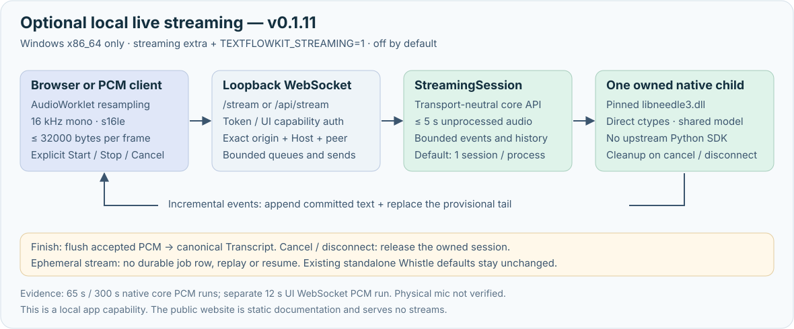

Command line
Transcribe a local file or URL, run batches, resume saved work, and export subtitles or documents.
Explore CLI →Transcribe video and audio into timestamped, searchable text. One shared core for your command line, AI harness, and application.
Self-hosted toolkit · Native Windows, macOS, Linux · No account required
Latest verified release: v0.1.11 · User manual
# A URL or a file. Your machine does the work. $ textflowkit transcribe talk.mp4 --formats json,srt,txt ✓ talk-<job-id>.json ✓ talk-<job-id>.srt ✓ talk-<job-id>.txt # Or run it under an AI harness $ textflowkit-mcp
Use the interface your product already speaks. The pipeline and transcript format stay the same underneath.
Transcribe a local file or URL, run batches, resume saved work, and export subtitles or documents.
Explore CLI →Connect AI harnesses over stdio or Streamable HTTP. Submit jobs, poll status, search, and page through results.
Explore MCP →Give software a job-based JSON interface. Keep long transcriptions off the request-response clock.
Explore API →Use a local file, a direct media URL, or a recognized platform link.
yt-dlp acquires supported URLs; ffmpeg prepares audio for transcription.
The default speech engine, Whistle, produces timed segments on CPU with no PyTorch; openai-whisper is opt-in. Translation and speaker labels are optional.
Read, search, page, or export JSON, TXT, Markdown, SRT, or VTT. DOCX and PDF use an optional extra.
![TextFlowKit shared-core architecture: five thin entry points feed one core. The CLI, Python API, MCP, HTTP API, and the local browser UI (a fifth door that mounts the existing HTTP app under /api and shares the same job store, adding transport only, not a new pipeline) sit above one core that acquires and decodes media, transcribes with the default Whistle engine or an explicitly selected openai-whisper, keeps job state and resume checkpoints in an optional SQLite store, adds optional speaker or translation postprocessing, and publishes TXT, SRT, VTT, JSON, Markdown, and optional DOCX/PDF exports.](assets/architecture-overview.svg)
/api and shares the same job store — transport only, not a new pipeline. Whistle is the default engine; openai-whisper is opt-in.![Whistle bounded block run and durable resume: a decoded PCM WAV is split into 26-second cores with up to two seconds of context per side so every clip stays at or under the native CLI's 30-second limit, each core runs as one owned child process with a per-clip timeout and forced telemetry-off flags, a partial checkpoint is written to the durable SQLite store after each finished core, and a resume validates the source and decoded-WAV hashes and the window policy then re-runs only the unfinished cores.](assets/whistle-resume.svg)
TEXTFLOWKIT_DB, because a checkpoint cannot outlive a process that kept it in memory; a resume then re-runs only the cores that never finished.
StreamingSession and one owned native child. Windows x86_64 only, off by default; no durable job or resume. Existing file/URL jobs follow the separate diagrams. Physical microphone capture has not been verified; this public site serves no streams.![TextFlowKit local browser interface request flow: the operator opens the workspace from a desktop shortcut or the textflowkit-ui command, which launches a loopback-only server on 127.0.0.1 that holds an exclusive owner lock on the durable SQLite database; the operator drops a file or pastes a URL, a file is streamed to a per-user upload folder capped at 2 GiB by default; both become a submission through the same shared submission contract the CLI, MCP, and HTTP doors use, writing a durable job that runs through the shared core (Whistle by default or an explicit optional engine) decoding with ffmpeg and transcribing on this machine; a finished transcript is searchable, copyable, downloadable in a fixed format list, and playable with the browser's native player on the currently selected media.](assets/local-ui-flow.svg)
The core now ships a point-and-click workspace. It is a local app you install and run yourself — this page is static documentation and offers no upload form, runs no transcription, and hosts nothing.
python -m pip install "textflowkit[http,export]==0.1.11" then textflowkit-ui. It adds no dependency beyond the http extra.textflowkit-ui --create-shortcut makes a Start Menu entry that launches with pythonw (no console) and needs no pywin32. That shortcut is the normal way to open it.127.0.0.1 and is never reachable off the machine, whatever TEXTFLOWKIT_ALLOW_REMOTE is set to.textflowkit CLI does not open a microphone or a streaming socket — its native audio-stream path stays disabled. Live transcription is a distinct capability of the two servers (the HTTP API's /stream and the UI's /api/stream), off unless TEXTFLOWKIT_STREAMING=1 is set, loopback-only, and verified with paced PCM through the native core (65 s and 300 s), plus a separate 12 s UI WebSocket PCM run; physical browser microphone capture has not been verified. It ships in the same wheel; see the streaming guide.$ python -m pip install "textflowkit[http,export]==0.1.11" $ textflowkit-ui --create-shortcut # then open it from the Start Menu shortcut
Public page vs. local app. This landing page is the public, static site. The browser workspace is a separate, local program: it never runs here and is not reachable from the internet. v0.1.11 adds opt-in local streaming; existing standalone defaults, file/URL jobs, CLI, and MCP behavior remain unchanged. This public site serves no streaming endpoint.
Python 3.10+ and ffmpeg are the starting point. Install from PyPI; the repository has GPU-specific notes, integration examples, and releases.
openai-whisper engine and to diarization.New here? Follow the v0.1.11 user manual for CLI, MCP, HTTP, the local browser interface, export, and troubleshooting examples, or the developer and integration manual for harness configuration and production settings.
$ python -m pip install "textflowkit[mcp,http]" $ textflowkit doctor
For a GPU-specific or Windows-native ROCm setup, follow the install guide instead of using this generic CPU-oriented quickstart.